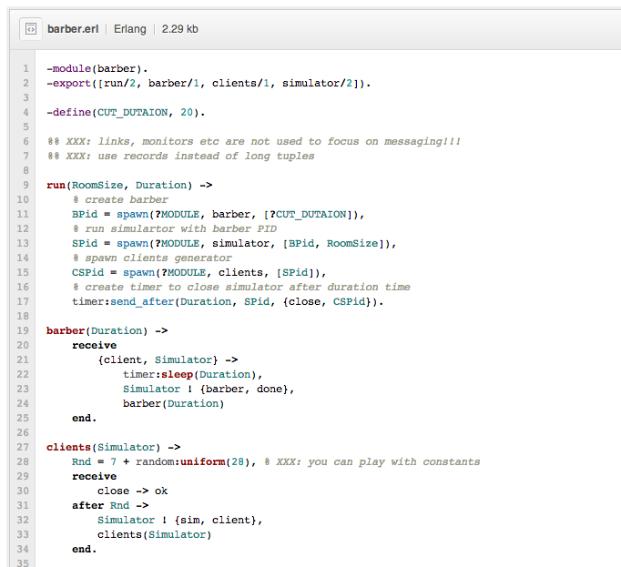
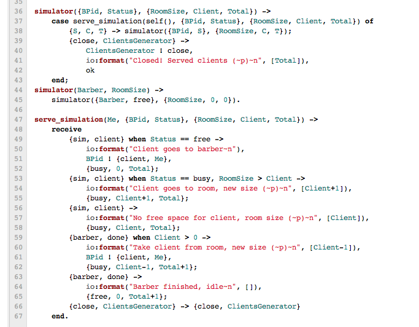
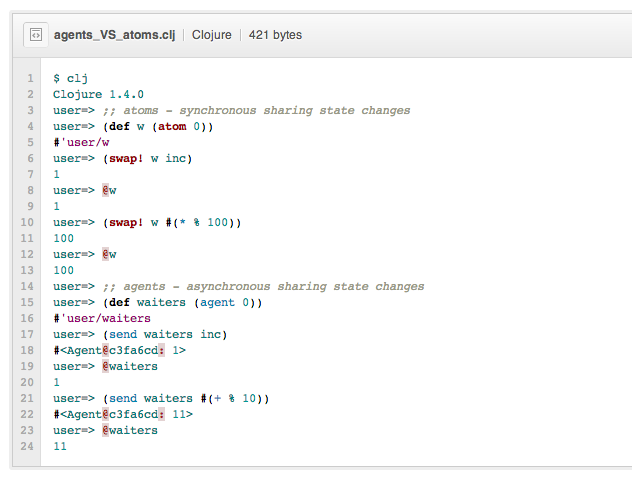
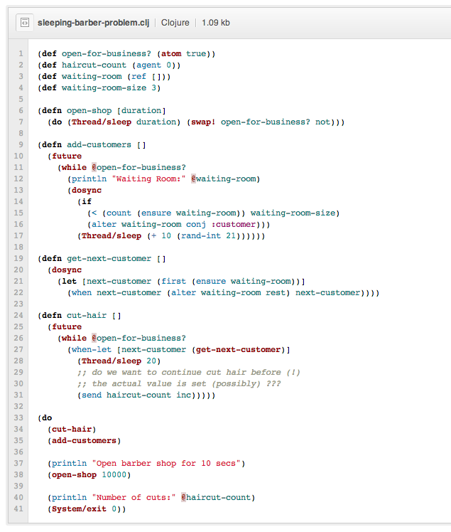

Modern concurrency:
Erlang, Scala, Go, Clojure
by Alexey Kachayev, 2013
About me
- Position: CTO at Kitapps Inc.
- Production experience: Python, Java, JS, Go, Scala, Clojure, Erlang
- Looked at: Haskell, Lisp, Scheme
Where to find?
What we are going to talk about?
- More about concurrency, (much!) less about parallelism
- Tasks: from practise and from theory
- Classical approach and problems: threads/locks/mutex
- One task, different solutions: Actors, Channels, STM
- What to choose and how to live with all this stuff?
- p.s. Why functional programming matters
Concurrency is not parallelism
Rob Pike:
Concurrency is the composition of independently executing computations.
Concurrency is a way to structure software, ...
Video "Concurrency is not parallelism"
Tasks
- Theory: Sleeping barber problem
- Practise: Cache manager for image viewer (you want to show several images on mobile screen downloaded from server, but you are hardly limited in free memory and disk space)
- Why should we solve this stupid theoretical tasks?
- Cause any task from practise is much more harder
Need more tasks from practise? Ping me after talk.
Hah, it's easy. Use locks, Luke!
"Classical" approach, each thread:
- check resource on disc
- "lock" hash map, check if someone download the same, "unlock"
- check HTTP head for Content-Length
- "lock" free space counter, try to subtrackt size, "unlock"
- if succesfull, read from HTTP body to disk
- if not, call somebody who will remove old file(s)
Hah, it's easy. Use locks, Luke!
Hmmm, really?
- What to do with crashes during dowloading image?
- What to do with "waiters" and how to manage free space on concurrent +/- operations?
- How to manage free space more "smart": 10 * 1 mb is better that 1 * 10 mb?
- How to "kill" task if image is not necessary (before it downloaded)?
- How this program will work if we run 1000 "downloaders"?
- Are you sure that your locks are good enough???
What the problem is with locks?
Jonas Boner, about fault-tolerant scaling:
- Locks do not compose
- Locks breaks encaplutaion (you need to know a lot!)
- Taking too few locks
- Taking too many locks
- Taking the wrong locks
- Taking locks in wrong order
- Error recovery is hard
What the problem is with locks?
- It's not the nature of our world!!! (we don't ask world to stop to do something)
- What to do with crashes in critical section?
- Impossible to test: you will know about problem only "in production"
Modern concurrency
- Actors (message passing)
- STM (Software Transactional Memory)
- Dataflow Concurrency (your homework)
Think about! You work in big free-space office with many programmers (hundreds), you have one board with pinned to it piece of paper. Each time you finish doing some task, you should increase number written on this paper. What options do you have? How will you organize everything? What will you do with paranoiac manager who wants to know how many tasks are already done (from time to time, often)?
What does actor looks like? (Theory)
- Separated isolated lightweight processes (actor)
- Share nothing, avoid side-effects (FP)
- Pure message passing communication (mailbox)
- Location transparency
What does actor looks like? (Erlang)

gist
What does actor looks like? (Erlang)

gist
What does actor looks like? (Scala)
- Very close to previous
- Approaches for state handling (rough, in short words): actor is a state (Scala) VS passing state as argument (Erlang)
Go Channels
"Rough analogy: writing to a file by name (process, Erlang) vs. writing to a file descriptor (channel, Go)." (c) Rob Pike
"Rough analogy: Assume Go channels as portable actor mailboxes" (c) Me
Clojure concurrency primitives
- Desinged for concurrency
- Identity and value are different things
- Different approaches for sharing changing state
- Software transactional memory - synchronous and coordinated approach (memory as database, atomicity, consistency, isolation)
- Agent(s) - asynchronous and independent approach
- Atom(s) - synchronous and independent approach
Clojure concurrency primitives

gist
Clojure concurrency primitives

gist
Clojure concurrency primitives
Why functional programming matters in Clojure:
- Side-effects free functions
- Deterministic functions/calculations
How to live with this
- I can write the same as Scala/Clojure/Go in Java/Python/..!
- hah, really...?
Everything that can go wrong will go wrong (c) Murphy
How to live with this
Quetion: Why does adding concurrency slow down this golang code?
Answer: The issue seems to come from your use of rand.Float64(), which uses a shared global object with a Mutex lock on it.
What to choose
- There is no silver bullet
- Use most natural approach for you technology / OP (there are many STM implementations, but in Clojure it's basic idea)
- Look deeply into your domain (presenters usually use most convenient case(s) to tell about functionality)
- Use "unusual" approach but remember that on this way only conventions rule
- If you need distributed concurrency - look at actors
What to choose
For Scala developers from Jonas Boner:
- Start with deterministic, declarative, immutable core
- Add indeterminism selectively (actors)
- Add mutability selectively (STM)
- Finally: add locks and explicit threads
Any questions?
Thanks for your attention